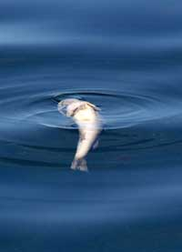

In the Gulf of Mexico, several miles off the Louisiana coast, liesone of the world's largest 'dead zones' ? oxygen-deprived areasdevoid of all marine life. Researchers predict that this summer,the dead zone will grow to cover nearly 6,700 square miles,an area roughly half the size of Maryland, and far larger than itssize in recent years of 4,800 square miles.
Worst of all, the dead zone is human-made: runoff from farms in theMidwest adds as much as 7.8 million pounds of nitrate fertilizer tothe Mississippi River and its tributaries each day during peakloading periods, which then runs downriver and empties into theGulf. As it does with plants grown on land, the nitrogen causesalgae and plankton in the area to flourish, using all availableoxygen in the water. The result is hypoxia, an oxygen depleted deadzone in which fish and other marine life simply cannotsurvive.
According to a study done by theEnvironmental Working Group, much of thefertilizer runoff comes from heavily subsidized farms in the CornBelt, an area that includes Iowa, Illinois and Indiana. Cornrequires the highest fertilizer input of any major crop, and about45 percent of all commodity support payments in that area go to itsproduction. The money typically spent on taxpayer-funded farmsubsidies in the area dwarfs the amount spent on efforts to protectwater quality and conservation by a ratio of more than 500 to1.
To learn more about the dead zone, visit theScienceMuseum of Minnesota's interactive site, or theMississippiRiver Basin Alliance.
|
 Nitrogen from fertilizer runoff causes huge dead zones in the oceans where fish and other marine life can't survive. |
|
|